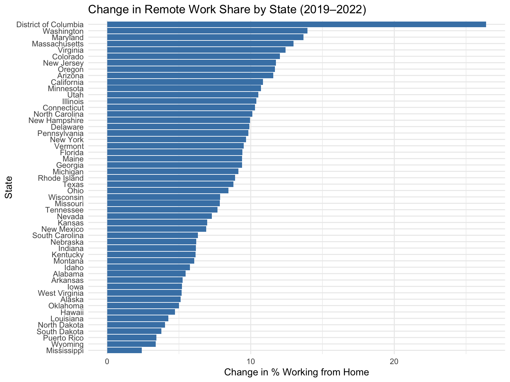
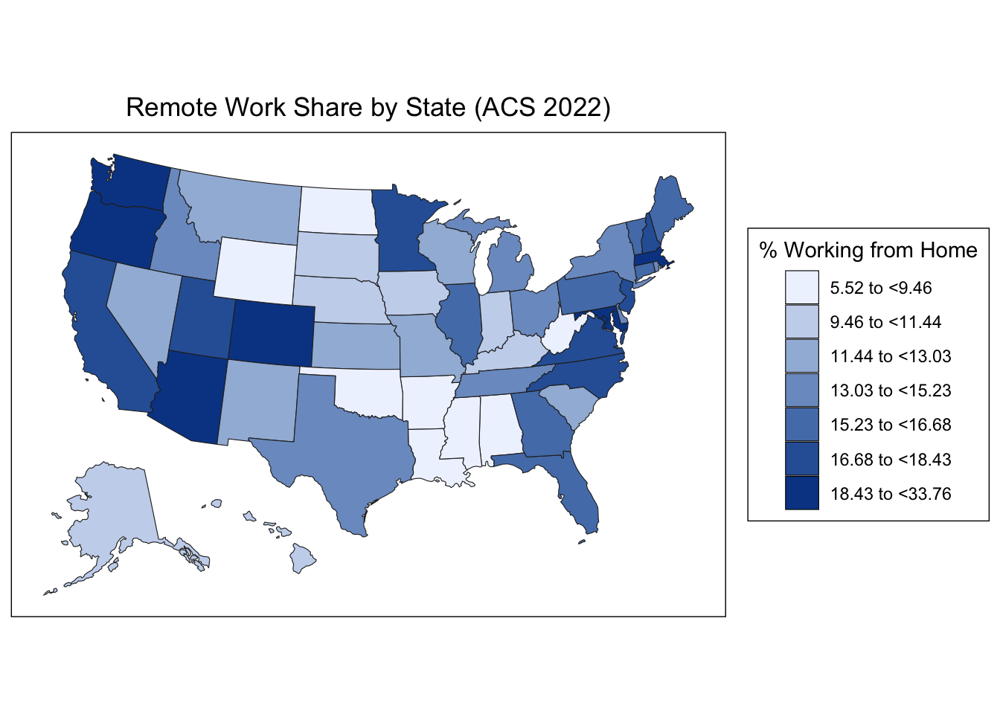
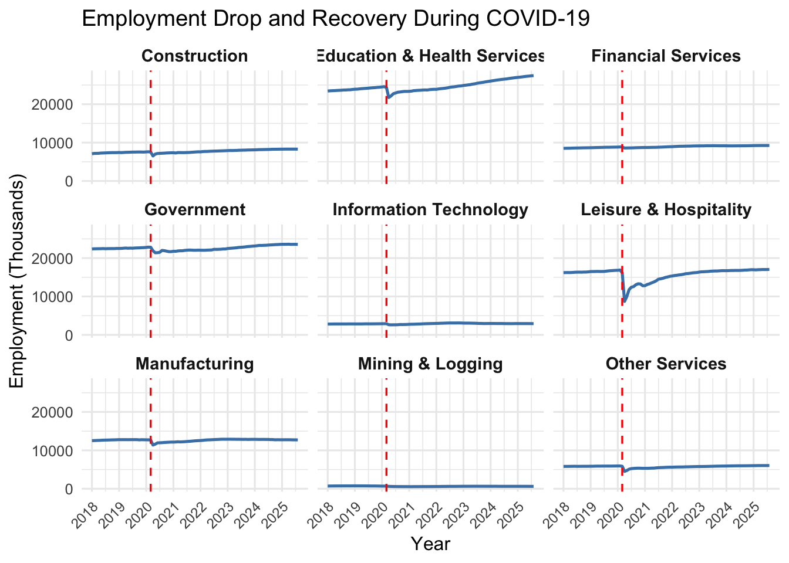
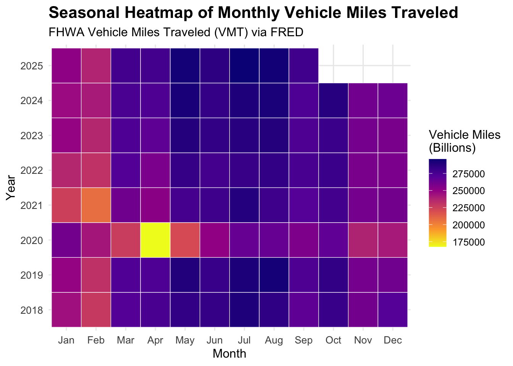
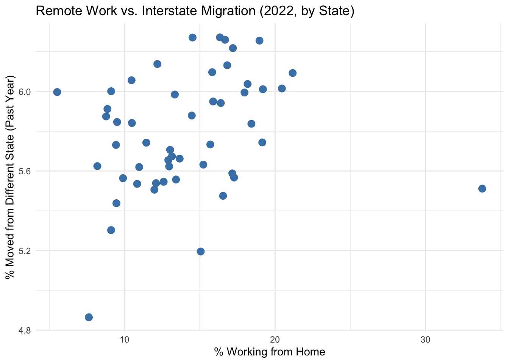

ggplot(acs_remote_change, aes(x =reorder(NAME, change), y = change)) +geom_col(fill ="steelblue") +coord_flip() +labs(title ="Change in Remote Work Share by State (2019–2022)",x ="State", y ="Change in % Working from Home") +theme_minimal()

3.1.2Interpretation
The plot shows how much each state’s share of remote workers increased from 2019 to 2022. Washington, Maryland, Virginia, and D.C. saw the largest jumps, while many Southern and Midwestern states saw smaller increases. This highlights strong regional differences in remote-work adoption after COVID.
3.1.3Plot 2 - Remote Work Share by State
Code
library(dplyr)library(tidyr)library(tibble)library(choroplethr)# Step 1: Prepare ACS data in the required formatdf_remote <- acs_remote_2022 %>%transmute(region =tolower(NAME), # match choroplethr namingvalue = remote_pct_2022 # renamed to "value" )# Step 2: Draw the map using state_choroplethstate_choropleth(df_remote,title ="Remote Work Share by State (ACS 2022)",legend ="% Working from Home")

3.1.4Interpretation
The map shows wide geographic variation in remote-work adoption in 2022. States on the West Coast, Mountain West, and Northeast have the highest work-from-home rates, while much of the South and Midwest show lower levels. One can infer that remote work remains concentrated in tech-professionals based in and urban regions.
3.2Employment by Industry and Traffic Volume
(Data Sources: Bureau of Labor Statistics & FHWA)
3.2.1Plot 1 - Employment Drop and Recovery During COVID-19
Code
library(readr)library(dplyr)library(tibble)library(ggplot2)# Step 1: Load CES databls_raw <-read_tsv("/Users/a348092/Documents/Mshamim_Docs/Continuing Education/EDAV/Final Project/ce.data.0.AllCESSeries.txt",col_names =c("series_id","year","period","value","footnote"),skip =1)# Step 2: Updated industries (P&B Services removed, Other Services added)industries <-tibble(series_id =c("CES1000000001", # Mining & Logging"CES2000000001", # Construction"CES3000000001", # Manufacturing"CES5000000001", # Information Technology"CES5500000001", # Financial Services"CES6500000001", # Education & Health Services"CES7000000001", # Leisure & Hospitality"CES9000000001", # Government"CES8000000001"# Other Services ),label =c("Mining & Logging","Construction","Manufacturing","Information Technology","Financial Services","Education & Health Services","Leisure & Hospitality","Government","Other Services" ))# Step 3: Filter dataset to selected industriesdf_bls <- bls_raw %>%filter(series_id %in% industries$series_id, period !="M13") %>%mutate(month =as.integer(substr(period, 2, 3)),date =as.Date(paste(year, month, "1"), "%Y %m %d"),value =as.numeric(value) ) %>%left_join(industries, by ="series_id")# Step 4: Zoom into 2018–2024 (COVID focus)df_zoom <- df_bls %>%filter(date >=as.Date("2018-01-01"))# Step 5: COVID shock plot with fixed y-axisggplot(df_zoom, aes(date, value)) +geom_line(color ="steelblue", size =0.9) +geom_vline(xintercept =as.Date("2020-03-01"),linetype ="dashed", color ="red", linewidth =0.6) +facet_wrap(~ label, scales ="fixed", ncol =3) +labs(title ="Employment Drop and Recovery During COVID-19",x ="Year",y ="Employment (Thousands)" ) +scale_x_date(date_breaks ="1 year", date_labels ="%Y") +theme_minimal(base_size =12) +theme(axis.text.x =element_text(angle =45, hjust =1, size =9),strip.text =element_text(size =11, face ="bold") )

3.2.2Interpretation
The plot shows how COVID-19 affected employment across major U.S. industries. Leisure & Hospitality experienced the steepest collapse, while Construction, Government, Financial Services, and IT saw milder declines. Most sectors recovered gradually after 2020, but the size and speed of recovery varied, revealing uneven pandemic impacts across the labor market.
3.2.3Plot 2 - Seasonal Heatmap of Monthly Vehicle Miles Traveled
Code
library(tidyverse)library(lubridate)# Load FRED key once (if not already done)library(fredr)fredr_set_key(Sys.getenv("FRED_API_KEY"))# Get FHWA Vehicle Miles Traveled data from FREDvmt <-fredr(series_id ="TRFVOLUSM227NFWA", # FHWA total vehicle milesobservation_start =as.Date("2018-01-01"))# Step 1: Prepare VMT datavmt_heat <- vmt %>%mutate(Year =year(date),Month =month(date, label =TRUE, abbr =TRUE) )# Step 2: Plot heatmapggplot(vmt_heat, aes(x = Month, y =factor(Year), fill = value)) +geom_tile(color ="white") +scale_fill_viridis_c(option ="plasma",name ="Vehicle Miles\n(Billions)",direction =-1 ) +labs(title ="Seasonal Heatmap of Monthly Vehicle Miles Traveled",subtitle ="FHWA Vehicle Miles Traveled (VMT) via FRED",x ="Month",y ="Year" ) +theme_minimal(base_size =12) +theme(axis.text.x =element_text(size =10),axis.text.y =element_text(size =10),plot.title =element_text(size =16, face ="bold"),plot.subtitle =element_text(size =12) )

3.2.4Interpretation
The heatmap shows strong seasonal patterns in U.S. vehicle travel, with higher volumes in summer and lower in winter. A dramatic collapse appears in April 2020 during COVID lockdowns, followed by gradual recovery. Recent years show a return to typical seasonal rhythms, though not always matching pre-pandemic peaks.
3.3Remote Work vs. Interstate Migration (2022, by State)
Code
library(tidyverse)library(tidycensus)# Silence ACS messagesoptions(tidycensus.quiet =TRUE)# -------------------------------# 1. Remote work by state (ACS 2022)# -------------------------------acs_remote_2022 <-get_acs(geography ="state",variables =c(total ="B08006_001", # Total workersremote ="B08006_017"# Worked from home ),year =2022,survey ="acs1") %>%select(NAME, variable, estimate) %>%pivot_wider(names_from = variable, values_from = estimate) %>%mutate(remote_pct_2022 =100* remote / total)# -------------------------------# 2. Interstate migration by state (ACS 2022)# -------------------------------# B07001_010 = Lived in different state 1 year agoacs_interstate_2022 <-get_acs(geography ="state",variables =c(total ="B07001_001", # Total populationdiff_state ="B07001_010"# Moved from different state ),year =2022,survey ="acs1") %>%select(NAME, variable, estimate) %>%pivot_wider(names_from = variable, values_from = estimate) %>%mutate(interstate_pct =100* diff_state / total)# -------------------------------# 3. Merge datasets# -------------------------------migration_remote_interstate <-left_join( acs_remote_2022, acs_interstate_2022,by ="NAME")# -------------------------------# 4. Scatter plot: Remote Work vs Interstate Migration# -------------------------------ggplot(migration_remote_interstate,aes(x = remote_pct_2022, y = interstate_pct)) +geom_point(color ="steelblue", size =3) +geom_smooth(method ="lm", se =TRUE, color ="black") +labs(title ="Remote Work vs. Interstate Migration (2022, by State)",x ="% Working from Home",y ="% Moved from Different State (Past Year)" ) +theme_minimal()

3.3.1Interpretation
This plot shows a weak but positive relationship between remote work and interstate migration in 2022. States with higher percentages of people working from home tend to have slightly higher rates of people moving in from a different state, but the relationship is modest and scattered — meaning remote work is one factor among many, not a dominant driver of interstate moves.